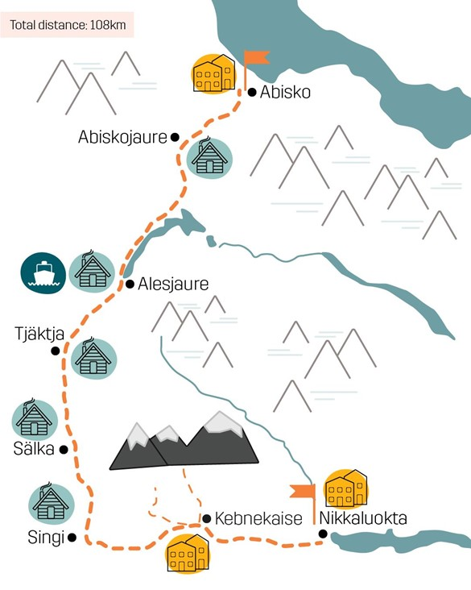
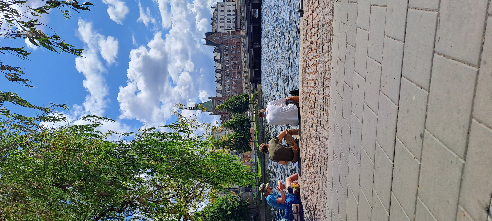
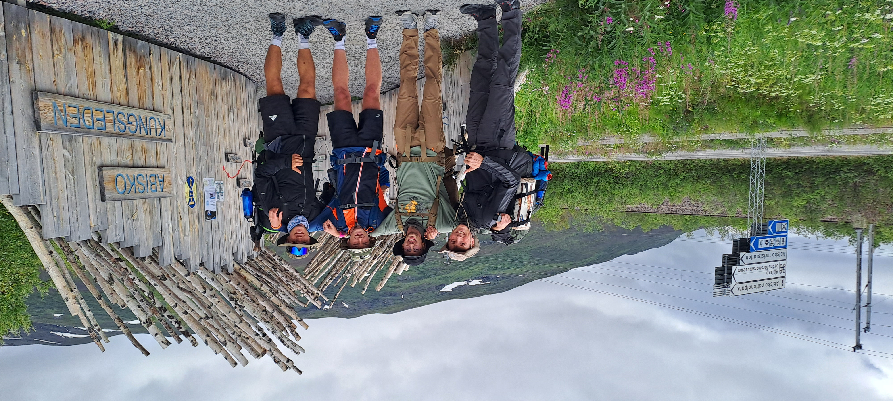
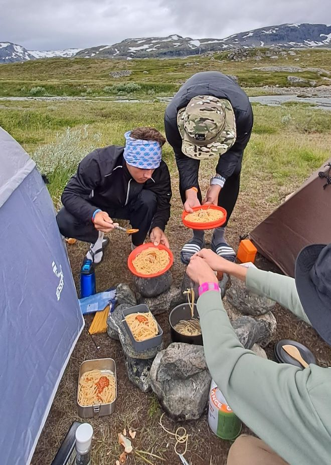
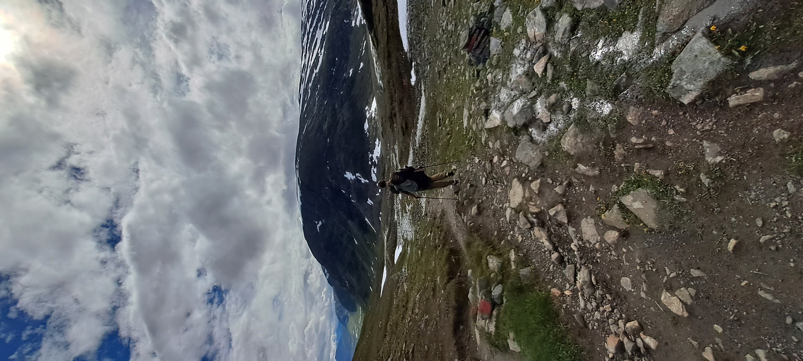
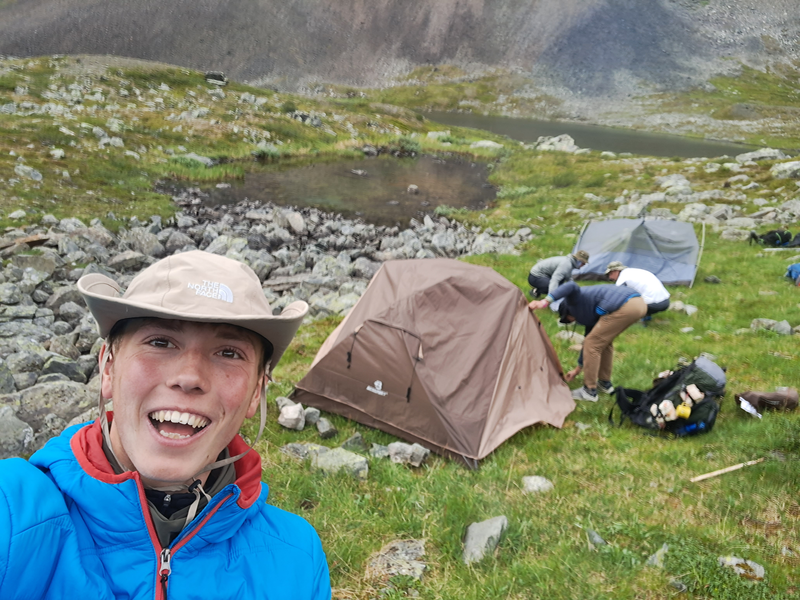
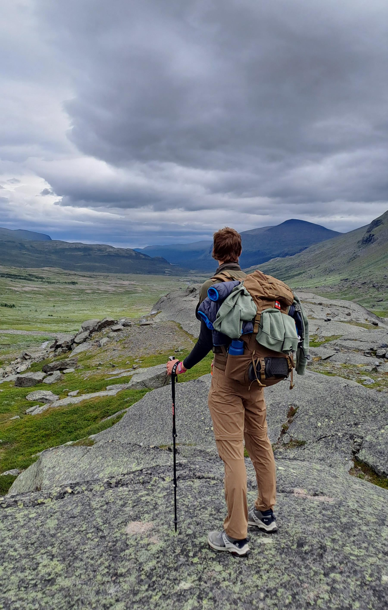

Kungsleden:
An Unforgettable Adventure from Abisko to Nikkaluokta. Hiking the wildest wildness of Sweden with the boys (Max, Niki Jonas and I (Florian))
Exhausted, drenched to the bone, and with visibility reduced to a mere ten feet, we battled our way through a relentless rainstorm in the heart of the Swedish wilderness. Our goal: to conquer the highest peak of our Kungsleden trek. The once-familiar wooden pathway had vanished, replaced by a treacherous terrain of slippery rocks and hidden hazards. With every step, doubt crept in. Were we even on the right path?
The Kungsleden, or "The King's Trail," is a legendary 440-kilometer hiking route that winds through the stunning wilderness of Swedish Lapland. Our adventure, however, would focus on the most popular and picturesque section: the 110-kilometer stretch from Abisko to Nikkaluokta. This iconic trail offers a breathtaking panorama of diverse landscapes, ranging from tranquil birch forests and expansive alpine meadows to imposing mountain ranges and glacial rivers. To navigate this challenging terrain, one must be well-prepared or possess extraordinary endurance. Given the rugged nature of the trail, you might be able to guess which path we chose...
Before we delve into our epic journey, let's introduce the intrepid crew:
Jonas, our resident adrenaline junkie and high-performance athlete. With a heart full of adventure and a love for physical challenges, Jonas was particularly excited about the fishing opportunities along the Kungsleden. Little did he know that the harsh realities of camping, like poor sleep, onion-induced tears, and weary legs, would soon humbly even him.
Niki, our tent-carrying, Uno-playing strategist. Unlike Jonas, Niki had a more realistic outlook on the challenges ahead, admitting his preference for hotel rooms over tents. However, he surprised us all with his adaptability. During a stormy night, he effortlessly slept on the hard ground next to his sleeping pad, completely oblivious to the collapsing tent above him.
Maxi, my brother, Tasked with map navigation and logistical planning, Maxi's map-reading skills were questionable at best (Luckly we did not really need a map since the trail is the only thing existing out there). However, his transportation choices were spot on. As for the contents of his overstuffed backpack, that remains one of life's greatest mysteries. This was the map Maxi brought:
I (Florian) was the one coming up with the idea to hike the Kungsleden after all. What first seemed like a stupid idea soon went on to become a serios plan after I told the boys about it. With me being the one whose idea it was to get us in the remotest wildness of Sweden, I carried the responsibility of the adventure being executed successfully.

The Art of Preparation
Maxi's unconventional packing style perfectly foreshadows the most critical aspect of our Kungsleden adventure: preparation. The trail's remote nature necessitates meticulous planning, as there's no opportunity to resupply once you've started. Food, fuel, cooking gear, and even toilet paper must be carefully considered and packed. For four novice hikers, this was a daunting task.
The inspiration for this trip came from a former colleague at Doka, Michal. He had previously attempted the Kungsleden but fell short due to inadequate preparation. His firsthand experience highlighted the importance of thorough planning and the necessary equipment. By sharing his knowledge and insights, Michal paved the way for our own Kungsleden adventure.
Packing for a week-long wilderness adventure requires a delicate balance between practicality and weight. We carefully considered each item, aiming for a lightweight yet comprehensive pack.
Shelter and Sleep:
- Tents: We opted for two three-person tents, providing ample space for gear and comfortable sleeping arrangements.
- Sleeping Pads and Bags: These were essential for insulating us from the cold ground and ensuring cozy nights.
- Sleeping Masks: Given the long summer days in Lapland, sleeping masks were a necessity to block out the constant daylight.
Clothing:
- Versatile Layers: We packed a mix of lightweight and warm layers to adapt to changing weather conditions.
- Footwear: Sturdy hiking boots were a must, providing support and protection on the rugged terrain.
- Accessories: Hats, gloves, and a rain poncho were included to shield us from the elements.
Hygiene and First Aid:
- Biodegradable Products: To minimize our environmental impact, we used eco-friendly toiletries.
- First Aid Kit: A well-stocked first aid kit was essential for addressing any potential injuries or ailments.
Food and Cooking:
- Lightweight Cookware: A compact cooking set and individual utensils were packed for meal preparation.
- Food Supplies: We planned our meals in advance and packed dehydrated food to minimize weight.
- Fishing Gear: Jonas and I brought fishing rods, hoping to supplement our diet with fresh catches.
Other Essentials:
- Electronics: Cameras, headlamps, and power banks were included to capture memories and stay connected.
- Entertainment: A deck of Uno cards provided entertainment for downtime.
- Navigation Tools: A map and compass were essential for navigating the trail.
With our packs carefully organized, we were ready to embark on our Kungsleden adventure.
Planning our route was relatively straightforward, as the Kungsleden is a well-established trail with limited options. The real challenge lay in selecting suitable campsites. Sweden's "Allemansrätt" (Everyman's Right) principle allows for wild camping, granting us the freedom to pitch our tents almost anywhere. While there were designated huts along the trail, we weren't restricted to these sites. The abundance of fresh water sources, often filtered through natural streams and lakes, further simplified our preparations. Although a water filter wasn't strictly necessary, it was a wise precaution to ensure the purity of our drinking water.
Stockholm touchdown
To embark on our Kungsleden trek, we first had to reach the northernmost town of Abisko. Given its remote location, air travel was the most convenient option. While Kiruna, the closest airport, would be our departure point, we decided to start our journey in Stockholm. This decision was driven by several factors:
- Supply Run: Stockholm provided a convenient opportunity to stock up on essential supplies like food and fuel for our stove, which might not have been readily available in remote Kiruna.
- Exploring Stockholm: We were eager to explore the Swedish capital and experience its unique culture.
- Scenic Night Train: Sweden's efficient railway system allowed us to take a scenic night train from Stockholm to Abisko, offering a comfortable and immersive travel experience.
Our journey began smoothly with a flight to Vienna followed by a connecting flight to Stockholm. Navigating the city center and exchanging currency proved to be slightly more challenging than anticipated, but we eventually managed.
With a full day in Stockholm, we took advantage of the pleasant weather to explore the city's beautiful sights. The day was also dedicated to essential preparations: finalizing our packing list, purchasing food supplies, and strategizing our fishing tactics. Despite our confidence in our angling skills, we realized the importance of a solid food plan, especially given the uncertainties of wilderness fishing.
Our next challenge was procuring food supplies. We opted for a convenient solution: Lidl. While this seemed logical, we quickly realized the impracticality of lugging heavy backpacks filled with groceries through the bustling streets of Stockholm. This unexpected weight became a significant inconvenience, highlighting the difference between urban and wilderness logistics.
Our food choices included:
- Breakfast: Porridge (a favorite of Niki's)
- Lunch: Crispbread with peanut butter (perhaps not the most substantial option)
- Dinner: Spaghetti with pesto and rice with onions (a side dish for our anticipated fish catch)
- Snacks: A generous supply of candy bars
After the shopping spree, we faced the daunting task of packing our overstuffed backpacks. We resorted to unconventional methods, utilizing every available zip and pocket to accommodate the excess food. This experience taught us a valuable lesson about the importance of efficient packing, especially when carrying heavy loads. (zuwispacksen)
With our preparations complete, we had some free time to explore Stockholm. We started with a “classic” Swedish lunch at McDonald's, enjoying our meal by the seaside.
Next, Maxi, our energetic tour guide, took us on a whirlwind tour of the city. Despite the weight of our backpacks, we managed to visit some impressive buildings and most importantly the Viking Museum, a highlight of the trip for its impressive restrooms and much-needed rest spots.
Before boarding our night train, we indulged in an all-you-can-eat Chinese buffet. This was a risky move, as food poisoning could have derailed our entire trip. Fortunately, our stomachs held up, and we fueled up for the journey ahead.
As we settled into our train compartment, we were disappointed to discover that the advertised "shower on board" was a mere rumor. This unexpected inconvenience added to the discomfort of our overnight journey (and even more discomfort for the two other people sharing their train department with us).

Day 1: A Journey Begins
Our overnight train journey was a remarkable experience. We slept soundly in our three-tiered compartment, waking up refreshed and ready to embark on our adventure. The train traversed through the remote landscapes of Sweden, offering breathtaking views that we unfortunately missed due to our slumber.
In Umea, we transferred to a smaller train for the final leg of our journey. A chance encounter with a friendly German traveler led to a spontaneous seat swap, allowing us to spend the last two hours playing an intense game of Uno.
As the train journey drew to a close, the anticipation for our Kungsleden adventure grew. Stepping off the train in Abisko, we were immediately immersed in the wilderness. The town itself serves as the gateway to the Kungsleden, making it impossible to miss the trailhead.
With a few quick photos at the starting point, we bid farewell to civilization and embarked on our journey. The trail was sparsely populated, with only a handful of other hikers, including the friendly German traveler we had met on the train. This solitude would become a defining characteristic of our Kungsleden experience.

Our first day on the Kungsleden was a challenging introduction to the wilderness. The national park regulations prohibited camping and fishing, so our immediate goal was to hike through the park and find a suitable campsite outside its boundaries.
We began our trek by filling our water bottles from a nearby river, a refreshing start to our adventure. The trail led us through a serene birch forest, offering stunning views of the surrounding landscape. However, the weight of our heavily packed backpacks quickly became a burden, a testament to our underestimation of the physical demands of the hike.
As we hiked, we encountered another formidable foe: the mosquito. These relentless insects, larger than we had ever seen, swarmed us at every opportunity. We had to balance the need for rest with the desire to avoid becoming a mosquito buffet.
Despite the challenges, the breathtaking scenery and the thrill of the adventure kept us motivated. We soon reached the end of the national park, where we were finally free to camp. We found a picturesque spot near a bridge, joining a small community of fellow hikers.
After setting up camp, Jonas and I attempted to catch our dinner, but our fishing skills were no match for the elusive Swedish fish. We settled for a hearty spaghetti dinner instead. To cool off from the day's exertions, we took a bracing dip in the icy river. The shock of the cold water was invigorating, and we emerged feeling refreshed.
As the day wound down, we gathered in our tent for a game of Uno. With the sun setting late, we donned our sleeping masks and drifted off to sleep, surrounded by the tranquility of the Swedish wilderness.

Day 2: A Challenging Ascent
The second day dawned early for me, while Maxi and Niki were still deep in slumber. I grabbed my fishing rod and headed to the river, hoping to catch a breakfast. To my surprise, on the second cast, I hooked a small trout. It was a bittersweet victory, as I had to release the fish from its predicament.
Back at camp, I woke Jonas, who was equally excited about my catch. We built a small campfire and cooked the fish, enjoying a delicious outdoor breakfast. The smell of grilled fish lured Maxi and Niki out of their tents, and soon we were all sitting around the fire, fueled and ready for the day ahead.
After breakfast, we cleaned up camp and prepared for the day's hike. The trail led us across the river and up onto a higher plateau. Our backpacks still felt heavy, but we were determined to keep up with our German hiking companion.
Once we reached the plateau, the true wildness of Sweden unfolded before us. The wind picked up, making the hike even more challenging, but it didn't dampen our spirits. Jonas and I continued our fishing endeavors, hoping to replicate the morning's success, but luck was not on our side. Meanwhile, Maxi and Niki sought shelter from the wind behind a rock, enjoying a more leisurely pace.
The rest of the day was a monotonous routine of hiking, fishing, and resting. We took frequent breaks to conserve our energy and replenish our water supplies. As the day drew to a close, we decided to bypass the popular campsites near Alesjore and venture further into the wilderness. We sought a secluded spot, sheltered from the wind and with easy access to water.
We quickly found a suitable campsite, nestled near a glacial river. Despite the harsh conditions, Jonas and I couldn't resist the urge to try our luck fishing, but to no avail. With the wind howling outside, we huddled in our tent, cooking pasta for dinner. The warmth of the stove and the comforting smell of food provided a welcome respite from the harsh conditions. As the day came to an end, we retired to our sleeping bags, eager to rest and recharge for the next day's adventure.
However, Jonas's night was far from peaceful. The wind had become so strong that it partially collapsed his tent, leaving him exposed to the elements. While Niki remained oblivious to the chaos, Jonas struggled to repair the damage in the middle of the night. The next morning, Niki and I were astonished to hear about Jonas's ordeal.
Day 3: A Challenging Ascent and a Serene Descent
We woke up to a beautiful morning, the previous day's stormy weather replaced by bright sunshine. The campsite, nestled near the glacial river, revealed its stunning beauty in the clear light. We quickly packed up camp, skipping breakfast due to the questionable water quality. Eager to make the most of the good weather, we set off early, covering a few kilometers before pausing for a well-deserved breakfast.
To warm up, we enjoyed a cup of hot chocolate, a luxury item I had brought from my time in the Austrian military. Jonas and I also took advantage of the opportunity to fish, with Jonas coming tantalizingly close to landing a large trout. Unfortunately, the fish proved elusive, and we were left with pasta for dinner once again.
The trail continued to offer challenges, including numerous river crossings where we had to wade through the icy water. These crossings added an element of excitement to the journey.
As the weather deteriorated, we pressed on towards the Tjäkta Pass, the highest point of our hike. The approaching storm added a sense of urgency, but we were rewarded with breathtaking views of snow-capped mountains and cascading waterfalls. The sight of a mountain hut at the pass was a welcome relief, offering shelter from the elements.
As the rain intensified, we sought refuge in the mountain hut. The solitude of the place was striking, as we were the only occupants. We waited for the weather to improve, but as time passed, we decided to press on. Little did we know, we were still a significant distance from the actual Tjäkta Pass.
The trail became increasingly challenging, with large rocks and treacherous terrain. The relentless rain added to the difficulty, making the hike both physically and mentally demanding. With the rain now coming down the sky in masses we fought our way forward, unaware of the other group members due to limited vision because of the immense rainfalls everyone had to fight for his own. We had to trust, that the others did the same. Finally, we reached the true Tjäkta Pass, a breathtaking sight of snow-capped peaks and a serene valley. As the other group members started arriving at the top Jonas left the comment: “We basically swam up this pass.” We quickly sought shelter in the mountain hut, drying our soaked gear.
The contrast between the stormy conditions on one side of the pass and the sunny valley on the other was astonishing. We quickly packed up and continued our journey, eager to enjoy the pleasant weather.
The sunny valley offered a stunning backdrop for our hike. As we walked, we were delighted to spot our first reindeer, a truly magical encounter. Our journey led us to the Sälka hut, where we decided to camp for the night. The nearby river provided a perfect opportunity for a refreshing swim, and the small hut store offered a chance to indulge in a well-deserved beer.
We spent the evening relaxing by the river, enjoying the company of each other and the local wildlife, including the playful ground squirrels. We also got the opportunity to watch the Sami (local community) take care of their reindeer heard with the help of helicopters and dirt bikes. After a delicious pasta dinner cooked on a nearby bench, we took a dip in the icy river. As the sun began to set, we captured a memorable photo of our refreshing swim.
Later that night, Jonas managed to catch a small fish, though it was too tiny to eat. Despite this minor setback, we were content with our day's adventures and retired to our tents for a well-earned night's sleep, preceded by our nightly game of Uno.

Day 4: A Challenging Day and a Stunning Campsite
The next day began promisingly, and we set off on our planned route, aiming to reach the junction where the Kungsleden and Kebenaisleden trails diverge. We planned to camp near the hut at this junction, taking advantage of the flat terrain and potential amenities.
We started the day with a light breakfast, eager to make progress on the trail. The landscape began to change as we ventured deeper into the valley. The river widened, forcing us to navigate through multiple crossings. We had to be creative in finding suitable paths, sometimes wading through the water.
As we continued, we grew concerned that we had missed the junction to the Kebenaisleden. I decided to explore a higher vantage point, hoping to spot the hut. However, my intrusion into a bird's breeding territory resulted in a series of aggressive dive-bombing attacks. I learned my lesson and returned to the trail.
Relief washed over us as we finally spotted the hut. However, our plans to camp nearby were disrupted by the news that camping fees were required. Unwilling to pay for a spot that offered little value, we decided to continue our hike and find a suitable campsite.
The need for an internet connection for Jonas further motivated us to push on. We left the official Kungsleden trail and ventured into the mountains. The wind picked up significantly, making it difficult to find a sheltered campsite. After a thorough search, we discovered a small, wind-protected spot with a breathtaking view. It was easily our most stunning campsite though also the one we had to search for the longest. During the search some tension rose but this tension quickly disappeared once we had our spot.
Despite the harsh conditions, we made a small fire to dry our shoes. The cold weather deterred us from swimming in the nearby mountain lake, so we settled for a game of Uno and a pasta dinner. With a sense of accomplishment, we retired to our tents, knowing that we had made significant progress on the trail.

Day 5: A Serene Hike Towards the Finish Line
We woke up to a calmer day, the wind had died down, and we were eager to continue our journey. Our goal was to reach the Kebnekaise mountain station, a significant landmark and a hub for hikers. The landscape was stunning, with breathtaking views and challenging terrain. We were making good progress, and the excitement of reaching the station kept us motivated.
Upon arrival, we were impressed by the size and amenities of the Kebnekaise station. It was much larger than we anticipated, offering a variety of services including a restaurant, a shop, and even a sauna. After a brief stop to allow Jonas to attend to his university work, we continued our journey.
The trail led us through lush forests and alongside a large river or lake. With the end of the day approaching, Jonas and I decided to wait until we set up camp to try our luck fishing. We found a peaceful campsite nestled between trees, near a small river.
After setting up camp, we followed the small river to its confluence with the larger body of water. The forest became increasingly dense and the terrain more challenging, but our determination to catch fish kept us going. We emerged from the woods, muddy and scratched, but finally reached the lake. Despite our efforts, the fish remained elusive. Disappointed but undeterred, we returned to camp.
The evening meal was a simple affair, consisting of rice and onions. After dinner, we braved the icy river for a quick wash. To unwind, we played a game of Uno, a familiar routine by now.
As we prepared for the final day of our hike, we knew that we were nearing the end of our journey. With only 10 kilometers remaining, we were looking forward to a relatively easy day of hiking. Jonas, ever cautious, started a fire to dry our wet shoes, ensuring a comfortable start to the final day. We anticipated a flat, well-maintained path, leading to the Nikkaluokta hut and its much-awaited restaurant. The thought of a proper meal after days of dehydrated food was a delightful prospect.

Day 6: A Triumphant Finish and a Memorable Catch
The final day of our trek was indeed a breeze. The flat, well-maintained path made for easy walking, and the anticipation of a delicious meal at the Nikkaluokta hut kept us motivated. Niki, eager to reach the finish line, picked up the pace, leaving the rest of us struggling to keep up.
Despite the proximity to the end, Jonas and I couldn't resist the urge to fish one last time. We headed to the river, hoping to finally catch a decent-sized fish. As we had learned, the early morning hours were the most promising for fishing. We cast our lines, hoping for a bite.
The large, slow-moving river offered a unique fishing opportunity. Despite not knowing what species might inhabit such waters, we opted for a trout lure. To our surprise, we soon had a bite. After a brief struggle, we reeled in a decent-sized bass.
While we were excited about the prospect of a fresh fish dinner, we were also confident that we could catch more. This optimism, perhaps fueled by our recent success, led us to believe that we would have plenty of fish for the evening.
For the first time we were right in our fishing confidence. Shortly after the first fish was caught, Jonas landed a second one. Again, a bass. Fishing these waters became increasingly fun with us having one follow another.
With the belief that a third bass is lurking in the waters ahead I casted out my lure again. Jonas went a bit further upstream to try his luck there. Everything went normal until I saw a shadow follow my bait. A big shadow. I got excited big time, thinking I will catch the biggest bass yet. Now it was important to keep the bait spinning to keep the fish’s interest and get it to bite. The lure came closer and closer to the beach, and the shadow began speeding up. Before I know it I had the bite. But this was not a bass! The impact on the bait was too big. Immediately the fish realized that something was off, and a fight began. After a quick drill I managed to get the fish close enough to shore to have a look at it. I just hooked a big pike on a trout lure. This could be problematic, because a pike could easily slice through the line of my rod, set up to catch trout. Also, because we wanted to go for trout, we did not bring a net to help landing fish. A mistake as we should learn soon.
I wrestled the pike to the shore and Niki got ready to land the fish by hand. With Jonas not the scene (he is the only one in our group to ever catch a pike before) we were very close to make a big mistake. Niki was about to put his hand in the pike’s mouth to drag it out of the water. He nearly pulled this move up, put the pike managed to get rid of the bait in the last second and swam of. We later learned from Jonas, that we were in fact lucky this happened, because the trout would have sliced Nikis whole hand. So, I guess we were fortunate in misfortune. Even though we did not catch any more fish, we still had the two basses. These would be enough for a good feast later.
As we neared the end of the trail, a sense of bittersweet nostalgia washed over us. The familiar signs of civilization were both a welcome sight and a reminder that our adventure was coming to an end. The past six days had been a transformative experience, a test of our physical and mental limits. We had faced challenges together, shared laughter and frustration, and forged a deeper bond.
As we crossed the finish line, a mix of emotions surged through us. Joy, relief, and a profound sense of accomplishment filled our hearts. We had conquered the wilderness, pushed our boundaries, and emerged stronger. This adventure would forever be etched in our memories, a testament to our friendship and our shared love for the outdoors.